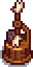

Auto-Petter
| Auto-Petter | |
 | |
| Joja Co. patented technology for coops and barns. Keeps your animals content, but can't replace the full benefit of human touch. Hand-petting can be provided to supplement. | |
| Information | |
| Cost: |
|
| Sold by: | JojaMart |
The Auto-Petter is a tool used to automatically pet barn and coop animals every day. It can be purchased from JojaMart for  50,000g after completing the Joja Community Development Form. It can also be found in Skull Cavern treasure chests (3.6% chance) and Golden Mystery Boxes (0.5% chance). Additionally, it can be obtained by killing monsters as a special item in The Mines during the Danger In The Deep quest or after activating the Shrine of Challenge.
50,000g after completing the Joja Community Development Form. It can also be found in Skull Cavern treasure chests (3.6% chance) and Golden Mystery Boxes (0.5% chance). Additionally, it can be obtained by killing monsters as a special item in The Mines during the Danger In The Deep quest or after activating the Shrine of Challenge.
Auto-Petters can be placed anywhere, but will not do anything unless placed inside a barn or coop. To remove an Auto-Petter, it must be struck with a tool or by repeated left-clicking.
Auto-Petters cannot be sold or deconstructed.
Animal Friendship
The Auto-Petter will prevent animals from losing Friendship or Mood due to lack of petting and animals will gain approximately the same Mood boost compared to manually petting. However, they will only gain 8 Friendship points (just over half of the normal amount of Friendship points) from petting this way. They will gain 15 Friendship points if they are also manually petted, exactly the same as the normal amount of Friendship points. Mood gains from an autopetter stacks with manual.[1] Mood gain from an autopetter is not affected by the Coopmaster or Shepherd Professions.
References
- ↑ See FarmAnimal::pet in the game code.
History
- 1.5: Introduced.
- 1.5.1: Fixed crash that could occur overnight when placing the Auto-Petter in an area that isn't a Coop or a Barn.
- 1.6.4: Can now be obtained from Golden Mystery Boxes.
| Tools | |
|---|---|
| Basic | Axes • Golden Scythe • Iridium Scythe • Hoes • Pans • Pickaxes • Scythe • Trash Cans • Watering Cans |
| Fishing | Training Rod • Bamboo Pole • Fiberglass Rod • Iridium Rod • Advanced Iridium Rod • Crab Pot |
| Other | Auto-Grabber • Auto-Petter • Hay Hopper • Heater • Incubator • Milk Pail • Ostrich Incubator • Shears |